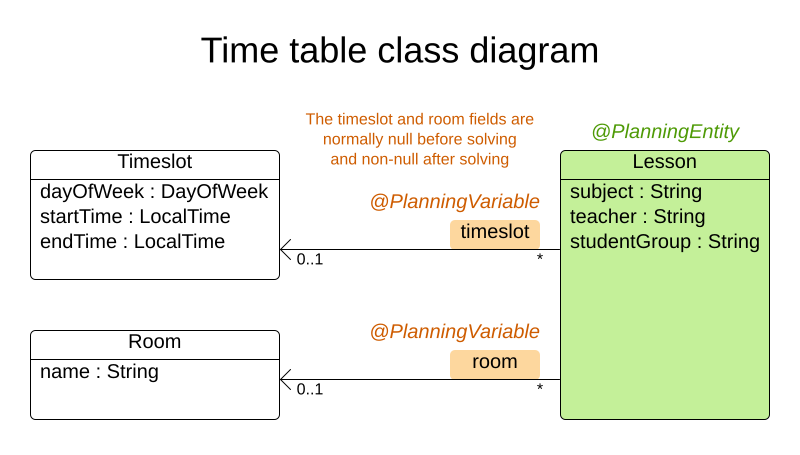
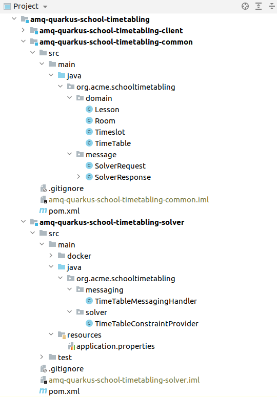
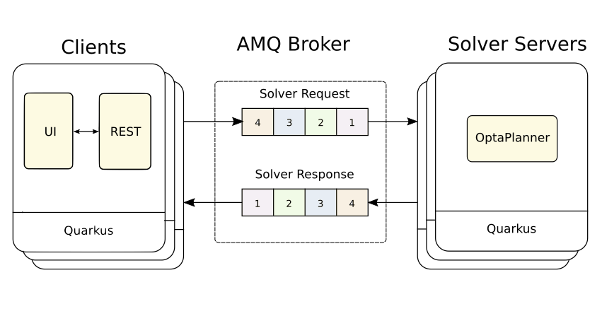

Batch solving an AMQ queue that contains planning problem data sets in a scalable way
If I want to solve many data sets of a planning problem every night, what architecture can easily scale out horizontally without loss of data?
In this article, we will take a look at how to use a transactional AMQ queue in front of a set of stateless OptaPlanner pods.
Client applications can submit data sets to solve and listen to the resulting solutions without worrying about which OptaPlanner pod does the actual solving.
In this article, we will take a look at how to use a transactional AMQ queue in front of a set of stateless OptaPlanner pods.
Client applications can submit data sets to solve and listen to the resulting solutions without worrying about which OptaPlanner pod does the actual solving.
The source code is available in the amq-quarkus-school-timetabling quickstart, along with the other optaplanner-quickstarts.
Batch Solving
Very often, there are multiple instances of the same planning problem to solve.
Either these come from splitting an enormous input problem into smaller pieces, or just from the need to solve completely unrelated data sets.
Imagine independently scheduling many vehicle routes for several regions, or optimizing school timetables for numerous schools.
To take advantage of time, you run OptaPlanner every night to prepare for the next day in the business or even longer for the next semester.
On the other hand, during the day or in the middle of the semester, there is nothing to optimize and so there should be no OptaPlanner running.
In other words, these cases call for batch solving.
Either these come from splitting an enormous input problem into smaller pieces, or just from the need to solve completely unrelated data sets.
Imagine independently scheduling many vehicle routes for several regions, or optimizing school timetables for numerous schools.
To take advantage of time, you run OptaPlanner every night to prepare for the next day in the business or even longer for the next semester.
On the other hand, during the day or in the middle of the semester, there is nothing to optimize and so there should be no OptaPlanner running.
In other words, these cases call for batch solving.
School Timetabling
The quickstart focuses on the school timetabling problem, which is described in depth in the Quarkus guide.
Let’s just very briefly revisit the problem domain and its constraints.
Let’s just very briefly revisit the problem domain and its constraints.
In the school timetabling problem, the goal is to assign each lesson to a room and a timeslot.
To use the OptaPlanner vocabulary, the
To use the OptaPlanner vocabulary, the
Lesson is a planning entity and its references to the Room and the Timeslot are planning variables.
The
TimeTableConstraintProvider defines the following constraints on how the lessons should be assigned to timeslots and rooms:- A room can have at most one lesson at the same time (hard).
- A teacher can teach at most one lesson at the same time (hard).
- A student can attend at most one lesson at the same time (hard).
- A teacher prefers to teach in a single room (soft).
- A teacher prefers to teach sequential lessons and dislikes gaps between lessons (soft).
- A student dislikes sequential lessons on the same subject (soft).
Quickstart structure

The project consists of three modules:
- amq-quarkus-school-timetabling-common defines the problem domain, and the
SolverRequestandSolverResponseclasses for messaging.
The following two modules depend on this one. - amq-quarkus-school-timetabling-client is the Client Quarkus application that contains a UI, a REST endpoint and a demo data generator.
- amq-quarkus-school-timetabling-solver is the Solver Server Quarkus application that solves school timetabling problem instances coming via a message queue
solver_request.
Messaging

The Client application serializes an unsolved
The Solver Server receives the request from this queue, deserializes it and solves the
After the solving finishes, the Solver Server wraps the
TimeTable wrapped by the SolverRequest class into a JSON and sends it to the solver_request queue.The Solver Server receives the request from this queue, deserializes it and solves the
TimeTable via OptaPlanner.After the solving finishes, the Solver Server wraps the
TimeTable by the SolverResponse class, serializes it to a JSON and sends it to the solver_response queue.Requirements
- No solver request message must be lost, even if the Solver Server crashes.
- Any error that occurs in the Solver Server must be propagated back to the Client.
- Invalid solver request message is sent to a dead letter queue.
AMQ is a natural fit
AMQ Artemis comes as a natural fit for this use case for multiple reasons.
First, it supports huge messages without extra configuration.
Second, solving may often take several hours before the Solver Server can send a response with a solution and finally approve the request message.
Last but not least, the AMQ guarantees to deliver each message exactly once, provided the messages are persisted at the broker.
These properties let the Solver Server avoid keeping any state and just transform the input planning problems into solutions.
First, it supports huge messages without extra configuration.
Second, solving may often take several hours before the Solver Server can send a response with a solution and finally approve the request message.
Last but not least, the AMQ guarantees to deliver each message exactly once, provided the messages are persisted at the broker.
These properties let the Solver Server avoid keeping any state and just transform the input planning problems into solutions.
For different use cases, for example, real-time planning, other technologies like Kafka may be a better fit, but for this use case, AMQ wins.
When messaging meets OptaPlanner
The quickstart uses Smallrye Reactive Messaging to send and receive messages.
Let’s take a look at the
Let’s take a look at the
TimeTableMessagingHandler located in the Solver Server application. ...
Solver<TimeTable> solver;
@Inject
ObjectMapper objectMapper; // (1)
@Inject
@Channel("solver_response") // (2)
Emitter<String> solverResponseEmitter;
@Inject
TimeTableMessagingHandler(SolverFactory<TimeTable> solverFactory) {
solver = solverFactory.buildSolver(); // (3)
}
@Incoming("solver_request") // (4)
public CompletionStage<Void> solve(Message<String> solverRequestMessage) { // (5)
return CompletableFuture.runAsync(() -> { // (6)
SolverRequest solverRequest;
try {
solverRequest = objectMapper.readValue(solverRequestMessage.getPayload(), SolverRequest.class); // (7)
} catch (Throwable throwable) {
LOGGER.warn("Unable to deserialize solver request from JSON.", throwable);
/* Usually a bad request, which should be immediately rejected.
No error response can be sent back as the problemId is unknown.
Such a NACKed message is redirected to the DLQ (Dead letter queue).
Catching the Throwable to make sure no unchecked exceptions are missed. */
solverRequestMessage.nack(throwable);
return;
}
TimeTable solution;
try {
solution = solver.solve(solverRequest.getTimeTable()); // (8)
replySuccess(solverRequestMessage, solverRequest.getProblemId(), solution);
} catch (Throwable throwable) {
replyFailure(solverRequestMessage, solverRequest.getProblemId(), throwable); // (9)
}
});
}
...- Inject
ObjectMapperto unmarshall the JSON message payload. -
Emittersends response messages to thesolver_responsechannel. - Inject a
SolverFactoryand build aSolver. - The
@Incomingannotation makes the method listen for incoming messages from thesolver_requestchannel. - By accepting
Messageas a parameter, you have full control over acknowledgement of the message.
The generic type of theMessageisString, because the message contains theSolverRequestserialized to a JSON String.
Finally, the return typeCompletionStage<Void>enables an asynchronous acknowledgement.
See Consuming Messages for more details. - Return a
CompletionStage<Void>to satisfy the method contract and avoid blocking the thread. - Unmarshall the JSON payload. If it’s not possible, reject the message.
- Solve the input timetabling problem and then send a reply (see the next figure).
- In case any exception occurs, include information about the exception into the response.
The example below shows how to reply and acknowledge the original request message:
private void replySuccess(Message<String> solverRequestMessage) {
...
solverResponseEmitter.send(jsonResponse)
.thenAccept(x -> solverRequestMessage.ack()); // (1)
...
}-
thenAccept()defines what happens when the AMQ broker acknowledges the response message sent via theEmitter.
In this case, the request message is acknowledged.
This way, the request message is never lost even if the Solver Server dies.
To understand how the channels correspond to messaging queues, see the
application.properties file located in src/main/resources:# Configure the AMQ source
mp.messaging.incoming.solver_request.connector=smallrye-amqp # (1)
mp.messaging.incoming.solver_request.durable=true # (2)
mp.messaging.incoming.solver_request.failure-strategy=reject # (3)
# Configure the AMQ sink
mp.messaging.outgoing.solver_response.connector=smallrye-amqp
mp.messaging.outgoing.solver_response.durable=true- Use the
smallrye-amqpconnector for thesolver_requestchannel. - To have the AMQ broker persist messages, make the queue durable.
- If a message is rejected, the broker redirects it to a dead letter queue and proceeds with the next message.
Every property contains the channel name. By default, it matches the name of the queue at the AMQ broker.
Running the quickstart
Prerequisites: install docker and docker-compose.
- git clone https://github.com/kiegroup/optaplanner-quickstarts
- cd optaplanner-quickstarts/amq-quarkus-school-timetabling
- ./run.sh
- Open http://localhost:8080 in a browser and click the Solve button.
Author

This post was original published on here.